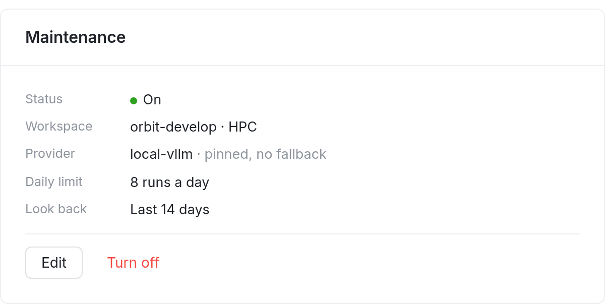
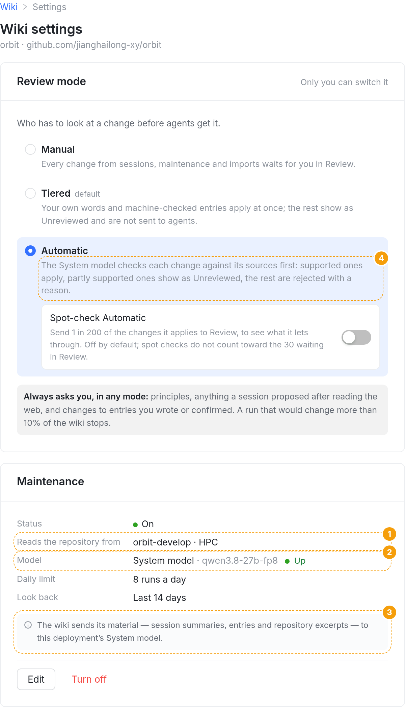
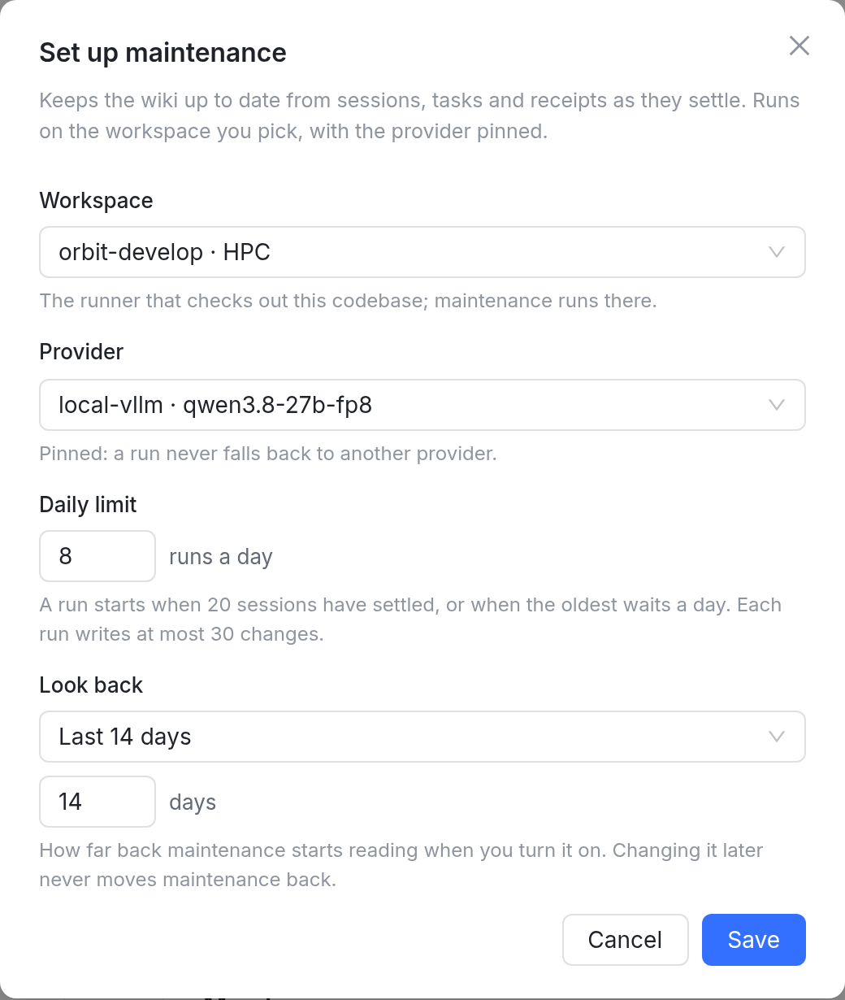
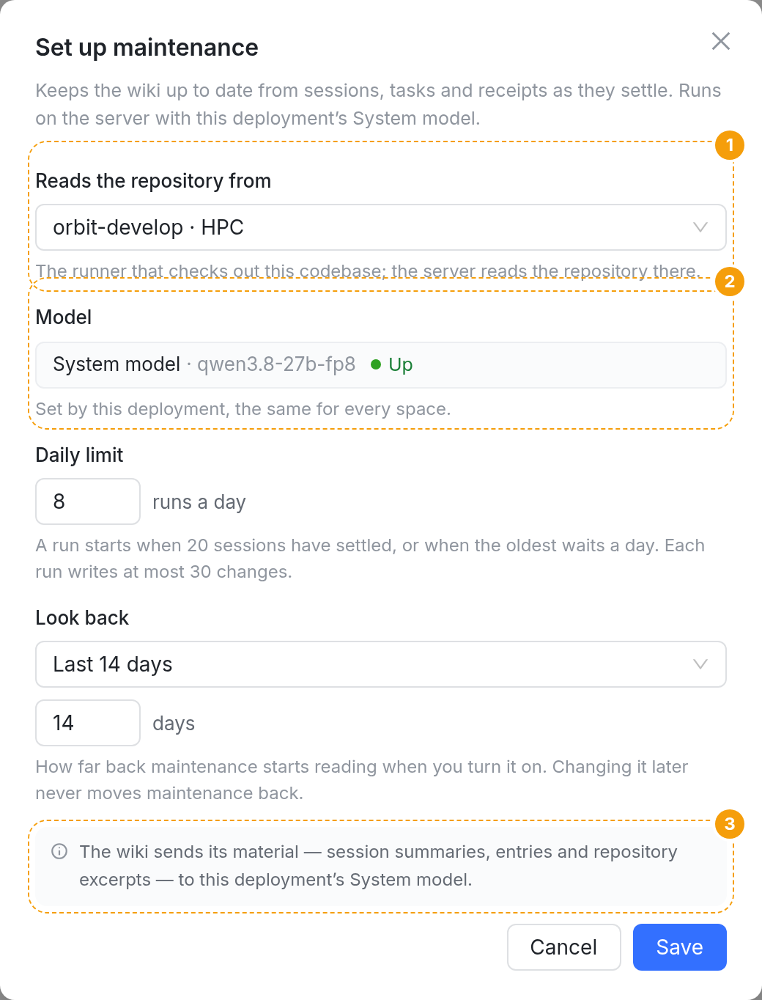
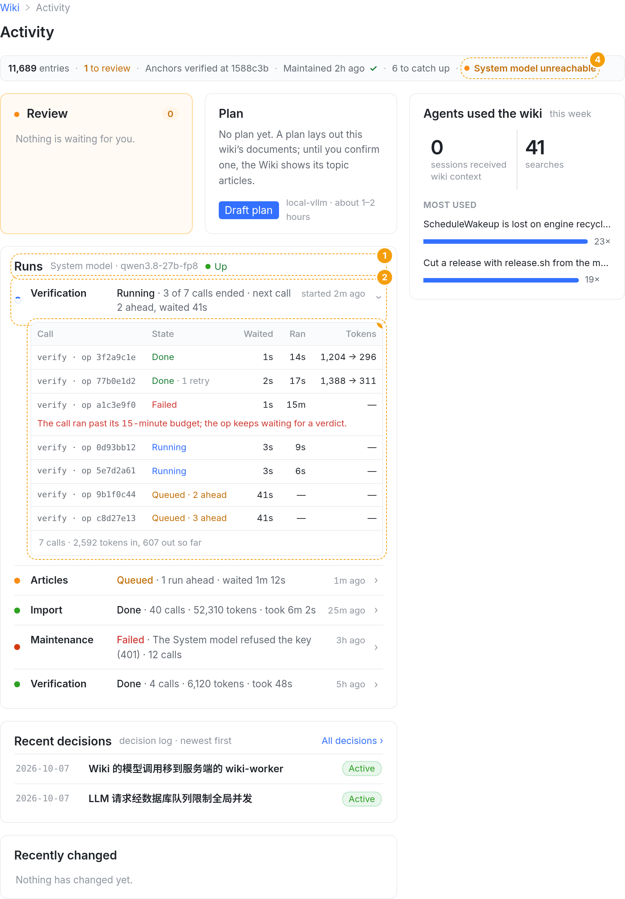
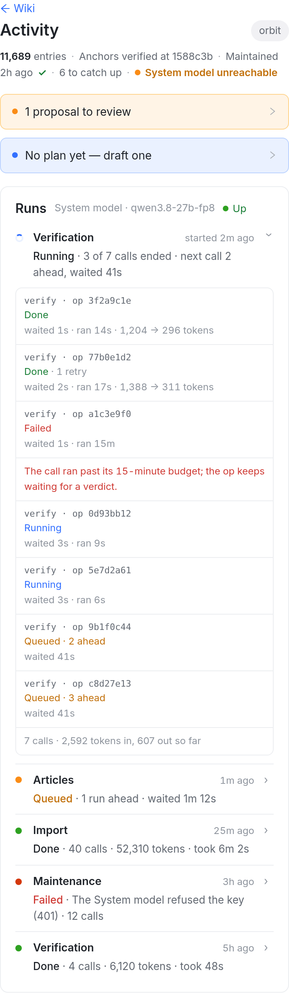

设计 §2.2 与架构图 ①③ 落到 web 和 macOS/iOS。只在本账号的 wiki 由服务端执行时（ORBIT_WIKI_EXECUTOR=server，或 canary 名单内的账号）这样画；runner 模式下界面一字不改。web 图都是本分支真实页面（vite + 假数据）截的，提案用将来实现要用的 class 注入真实 DOM；iOS 照图 20、31 的画法。数据示意：space orbit，System model 是 qwen3.8-27b-fp8。


1Workspace 改称「从哪里读仓库」：键名 Reads the repository from，值不变（workspace · 它所在的 runner）。服务端执行时 runner 只做仓库操作，不再跑维护会话。新词Reads the repository from
2Provider 换成只读的 Model：System model · <模型名>，后面是状态（五种，见 ③）。模型名和状态都来自 GET /api/wiki/system-model，地址和 key 从不出现。iOS 放在值的两行里（名字、状态）。新词Model · System model
3隐私说明一句（设计 §2.2）：web 在卡里、Edit 上面；iOS 是这一节的 footer。只在服务端执行时出现。新词The wiki sends its material — session summaries, entries and repository excerpts — to this deployment’s System model.
4Automatic 的那句里 local-vllm 换成 System model：服务端执行时核实由服务端作业用 System model 做（P3）。runner 模式仍写 local-vllm。
Orbit 一致性其余行（Status、Daily limit、Look back）、Edit / Turn off、审阅模式整张卡都不动。


1同一个改名，说明换成 The runner that checks out this codebase; the server reads the repository there.（今天是 …; maintenance runs there.）。表单头一句也换：Runs on the server with this deployment’s System model.新词
2Model 是只读的一行，不是下拉：没有可选的；说明 Set by this deployment, the same for every space. 写入时也不再发 provider（空间里存着的那个值原样留着，切回 runner 时照旧用它）。新词
3隐私说明放在表单最后：开启之前就看得到。iOS 是最后一节的 footer。
iOS 系统照图 20 ②：sheet 表单，左 Cancel、右 Turn on / Save；只读行没有选择器箭头。
| 读到的 state | web / iOS 的 Model 行 | 健康行（⑥） | 什么时候 |
|---|---|---|---|
up | System model · qwen3.8-27b-fp8 Up | 不加原因 | 探测 /health 答 200 或 404 |
down | System model · qwen3.8-27b-fp8 Unreachable | System model unreachable | 探测没回答或答了别的；队列暂停，恢复后自己继续 |
auth_failed | System model · qwen3.8-27b-fp8 Key refused | System model refused the key | 401；一直到部署方改好 key、重启 worker |
unconfigured | System model Not configured | System model not configured | .env 缺地址、key 或模型名；没有模型名，只写 System model |
worker_not_running | System model · qwen3.8-27b-fp8 wiki worker not running | wiki worker not running | 没有心跳行，或心跳超过 60 秒 |
新词Up · Unreachable · Key refused · Not configured · wiki worker not running（「正常」写 Up，和合同的 state 同名）。
颜色：会自己恢复的是琥珀（down），要人动手的是红（key、未配置、worker 没跑），同状态行今天的「琥珀=在等，红=坏了」。

1Runs 卡：放在 Review、Plan 之后、Recent decisions 之前（手机同一顺序，iOS 是 Activity 列表里的一节）。卡头写 System model · <模型名> · ● 状态。最多列最近 10 次运行，新的在上。只有服务端执行（或这个空间有过服务端运行）时出现。新词Runs
2一行一次运行：种类、状态一句、时间。种类：Maintenance · Plan draft · Plan revision · Documents · Import · Verification · Articles。状态一句：
· 排队：Queued · 1 run ahead · waited 1m 12s（前面还有几个作业、从建作业起等了多久；退避中写 retrying in 30s）
· 在跑：Running · 3 of 7 calls ended · next call 2 ahead, waited 41s（流水线写了步骤计数就用它，例如导入 reading 12 of 40 notes；它的调用在排队时说下一个调用前面还有几个、等了多久）
· 等仓库：Waiting for the runner · 3m
· 成功：Done · 40 calls · 52,310 tokens · took 6m 2s
· 失败：Failed · <原因第一行> · 12 calls
3点开 = 逐次调用日志（桌面在卡里展开成表，手机每次调用两行，iOS push 一页，见 ⑤）：调用（步骤 · 单元）、状态、Waited（排队时长）、Ran（耗时）、Tokens（入 → 出）；失败的调用下面红字写错误；排队的写 Queued · N ahead。表尾合计。一次运行最多列最近 40 次调用，多了写 Showing the last 40 of 112 calls。
4状态行带原因（⑥）。
不再链接隐藏的任务和会话：服务端运行没有会话；状态行的 View run 在服务端执行时打开这里的那一行（展开），不再去 /sessions/…。
假设示意数据：Maintenance、Plan、Documents 的服务端运行要等 P6–P8 落地才有，现在能看到的是 Verification、Import、Articles。Plan 卡里的 local-vllm · about 1–2 hours 留给 P6（plan 移到服务端时一起改）。另议

iOS 系统运行页是一个 push：导航栏写种类和开始时间，顶上三行事实（状态、下一个调用的排队位置、token 合计），下面 Calls 一节，每次调用两行（同 web 手机）。下拉刷新；在跑或排队时每 5 秒自己刷新一次。
协调性三端同一组词：Queued · N ahead、waited、ran、tokens、Done / Failed / Running / Cancelled。所有文案放进 src/shared/src/wiki-server-execution.fixture.json，web 测试和 OrbitKit 对照测试都读它。
新词Calls · Next call · State · Tokens · 1 retry · Showing the last 40 of N calls
只加一段，排在链接（Set up / View run）前面，同时有几个原因时只说最根本的那个：wiki worker 没跑 → 未配置 → key 被拒 → 不可达 → runner（等它上线 / 要升级）。
什么时候说：只在服务端执行的账号；模型的四种随时说（核实、导入、文章都要用模型，维护关着也一样）；runner 的两种在维护开着、或者有仓库操作在等时才说。
新词Waiting for the runner to come online · System model unreachable · System model refused the key · System model not configured · wiki worker not running
假设任务只列了前五种；P2 的合同还给了 runner_upgrade（runner 在线但没声明 wiki-repo-op/v1，设计 §7「健康行提示升级 runner」），图上一并画成 Upgrade the runner to read the repository，不要就删。no_workspace、runner_missing 不另说：设置页已写明从哪里读仓库。
| 读 | 新增 / 改动 | 给谁 |
|---|---|---|
GET /api/wiki/system-model | 加 executor：本账号的 wiki 是 runner 还是 server 执行（照 wikiExecutorServes）。其余字段不变，仍不含地址、key、last_error。 | 设置页、Set up、Runs 卡头 |
GET /api/wiki/spaces/:id/health | 加 executor、systemModel（同上那份读），running / lastRun / lastFailure 加 jobId（服务端运行的作业，View run 用）。repo（P2）照旧。 | 状态行的新原因、View run |
GET /api/wiki/spaces/:id/jobs 新 | 这个空间最近 10 次服务端运行：种类、状态、等什么、时间、错误、流水线写的步骤计数、调用计数与 token 合计、排队位置 ahead；每次运行带最近 40 次调用（步骤、单元、状态、入队 / 开始 / 结束时间、token、HTTP 状态、错误、排队位置 ahead）。只读，只给 owner；不含 prompt、答案和 partial。登记 PAT 装饰器、PUBLIC_ID_FIELDS、租户隔离 census；合同加 jobs.read。 | Activity 的 Runs 卡与运行详情 |
改动面：web WikiSettingsPage.tsx、WikiActivityPage.tsx（+ 新 WikiRunsCard.tsx）、WikiMaintenanceStatus.tsx、lib/wikiHealth.ts、lib/wikiReviewMode.ts、新 lib/wikiRuns.ts；OrbitKit WikiHealthLogic、WikiModeLogic、新 WikiRunsLogic、模型与 API；OrbitApp WikiSettingsView、WikiActivityView、新 WikiJobView；共享 wiki-server-execution.fixture.json；apiserver 读接口与 pg spec；contracts/wiki.contract.json、docs/wiki-contract.md。
待你定：① Reads the repository from 这个键名；② 「正常」写 Up；③ Runs 卡的位置（Review / Plan 之后）；④ 桌面在卡里展开调用日志、iOS push 一页；⑤ 是否保留 Upgrade the runner… 这第六种原因。